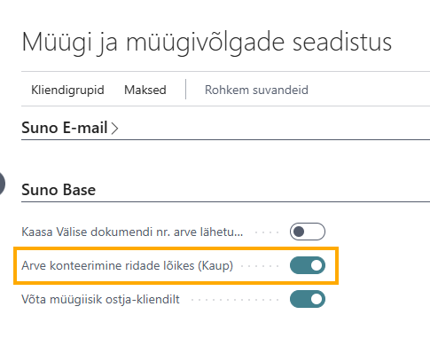

CentralPlus
Enne laienduse installeerimist on vaja lisada järgmised laiendused:
-
Kauba viited
-
Eesti käibemaksu aruandlus
Kasutajaõigused
Kasutajatele, kellel on piiratud õigused (mitte SUPER), peab määrama kasutaja õiguste komplekti CPC-BSE CENTRALPLUS.
Väljatrükid
Eesti seadusandluse põhjal koostatud dokumentide kujundused on lisatud järgmistele dokumentidele:
Ostutellimus
Konteeritud müügi kreeditarve
Arve mustand
Konteeritud müügiarve
Müügitellimus - tellimuse kinnitus ja pro forma
Müügipakkumine
Konteeritud müügilähetus
Koondostutellimus
Koondmüügitellimus
Trükised on loodud BC standard aruannete laiendustena.
Aruannete seadistamine
Kõikide ülaltoodud väljatrükkide rakendamiseks mine Ettevõtte andmed, kus vali menüüribalt Toimingud - Aruandevalikud - Rakenda Suno365 trükised:

Üksikutele dokumentidele on Suno trükiseid määrata järgides järgnevaid juhiseid:
1. Otsi Aruandevalik ning vali vastava mooduli aruandevalik
2. Vali Kasutus menüüst dokument, millel soovid trükist muuta
3. Kliki Aruande kujundus väljal
4. Vali meelepärane aruande kujundus märgistades rea ning vajutades OK
Suno365 väljatrükkide nimed algavad CPC-BSE.
Dimensioonide parandaja
BC standard dimensiooni parandajale (pearaamatu kannetel) on juurde lisatud väärtus-, kauba-, kliendi- ja hankijaandmiku kannetes dimensioonide muutmine.
Dimensioonide parandamiseks kannetel otsi Dimensiooniparandused ja loo Uus.
Vali, millistel andmikukannetel tuleb dimensiooniväärtus muuta. Vaikimisi lülitatakse kõikide andmiku kannete uuendamine sisse.
Pearaamatu kannete kopeerimine žurnaali
Otsi pearaamatu kannetest kanne, mida soovid kopeerida žurnaali. Žurnaali kopeeritakse sama ainult sama dokumendi numbriga seotud pearaamatu kanded.
Seejärel vali menüüribalt Toimingud -> Funktsioonid -> Kopeeri tehing žurnaali...
Kui valitud pearaamatu kanne on seotud teiste andmikega, siis antakse hoiatus, et teiste andmike kandeid kopeerimisse ei kaasata.
Avaneb Kopeeri tehingukanded leht, kus kuvatakse eelvaade kandest, mida žurnaali kopeeritakse.
Kande žurnaali jõudmiseks vajuta päises olevale Loo žurnaal nupule.
Loo žurnaali vajutamise järel tuleb küsimus, kas kanne kopeerida algse kande dokumendi numbriga või määrata uus dokumendi number.
Seejärel saad valida, millisesse žurnaalimalli ja millisele töölehele kanne kopeeritakse
Mine žurnaali, kuhu kande kopeerisid. Vajadusel tee muudatused ja konteeri žurnaal.
Asukoha lukustamine
Kui dokumendi real kasutatud asukoht on lukustatud, siis konteerimisel ja konteeringu eelvaatel kuvatakse veateade „Asukohta konteerimine blokeeritud".
Seadistamine
Mine Varude seadistus, kus lülita sisse Kasuta asukohtade lukustamist marker:
Kasuta asukohtade lukustamist markeri sisse lülitamisel tekib Asukoha kaardile Lukus väli, mis tuleb asukoha lukustamiseks sisse lülitada:
Kasutamine
Tehes tehingut kaubaga, mis asub lukustatud laos, tuleb konteerimise eelvaatel ja konteerimisel veateade:
Üleviimiskorraldusel kauba reserveerimine
Varude seadistuses Suno Base sektsiooni lisatud seadistus Üleviimiskorralduse rea automaatne reserveerimine.
Seadistuse sisse lülitamisel reserveeritakse üleviimiskorralduse ridadel olevad kaubad automaatselt. Standardis tuleb kauba reserveerimine teha käsitsi.
Konteeritud müügi dokumentide muutmine
Konteeritud müügiarve ja konteeritud müügilähetus dokumentidele on lisatud võimalus muuta dokumendil kindlaid väljasid.
Ava muutmist vajav konteeritud dokument ning vali menüüribalt Avaleht -> Muuda dokumenti.
Avaneb konteeritud dokumendi muutmise leht, kus on toodud kõik väljad, mida on võimalik konteeritud müügiarvel muuta.
Konteeritud müügilähetusel on võimalik muuta järgmiseid välju:
Lisakulud
Reapõhine lisakulude (nt transport) lisamine kaubale. Lisakulu seotakse kaubaandmiku kannetes määratud kaubaga.
Seadistamine
Müügi dokumendi reale lisakulu määramiseks tuleb Müügi ja müügivõlgade seadistuses määrata Lisakulu tähis. Kokku on võimalik määrata 3 lisakulu tähist.
Kasutamine
Lisakulu tähise seadistamise järel tekib müügitellimuse ja müügiarve ridadele Lisakulu väli
Lisatud lisakulu kajastub ainult müügilähetusega seotud väärtuskannetes
Arve konteerimisel tekkivad kanded
Müügi seadistamine
Müügi ja müügivõlgade seadistuses võimalik seadistada arve konteerimine kauba ridade lõikes ning kauba rea nimetuse kopeerimine PR kandele.

Arve konteerimine ridade lõikes (Kaup) seadistuse sisse lülitamisel konteeritakse sama kauba koodiga read eraldi (standardis summeeritakse kokku) ning kopeeritakse dokumendi real olev kirjeldus kande kirjelduseks.
Ostu seadistus
Ostude ja ostuv. seadistusse lisatud seadistus Arve konteerimine ridade lõikes.
Arve konteerimine ridade lõikes seadistuse sisse lülitamisel tekitatakse iga ostuarve kauba ja põhivara rea kohta eraldi pearaamatu kande rida ning ostuarve rea kirjeldus kopeeritakse kande kirjelduseks.
Kauba kohustuslikud väljad
Kaubale saab seadistada kohustuslikud väljad läbi kaubakategooria.
Seadistamine
Varude seadistuses vajalik sisse lülitada Kauba kohustuslikud väljad.
Mine Kaubakategooriad loendisse, vali rida, millele soovid kohustuslikke välju määrata. Seejärel vali menüüribalt Uus kõrval olevalt noolelt avanevast menüüst Kauba kohustuslikud väljad.
Avaneval Kauba kategooria kohustuslikud väljad lehel märgi väljad, mis on kohustuslikud:
Kasutamine
Lülitades Varude seadistuses sisse Kauba kohustuslikud väljad, tuleb igale kaubale määrata kaubakategooria tähis.
Luues uue kauba kaardi aktiveerub kaardil Lukus väli.
Lukus välja saab deaktiveerida siis, kui kõik kaubakategooria kaudu seadistatud kohustuslikud väljad on kauba kaardil täidetud.
Müügitellimuselt üleviimiskorralduse loomine
Seadistus
Müügitellimuselt otse üleviimiskorralduse loomise eeldus on, et Varude seadistuses on määratud Nõudelehe mall ja Nõudelehe nimi ning seadistatud üleviimismarsruudid või Varude seadistuses sisse lülitatud Vaikimisi otse üleviimine seadistus.
Kasutamine
Müügitellimusel olles vali menüüribalt Toimingud - Funktsioonid - Moodusta Üleviimiskorraldus.
Küsitakse üle, kas üleviimiskorraldus luuakse kõikidele ridadele või ainult valitud ridadele (müügitellimusel märgistatud ridadele).
Avaneval lehel määra, millise on üleviimislähte tähis
Müügiisik ostja kliendi kaardilt
Standard BC-s kirjutatakse müügi dokumendil müügiisiku väli üle maksja kliendi müügiisikuga kui maksjaks määratakse teine klient.
Lülita Müügi ja müügivõlgade seadistus Suno Base sektsioonis Võta müügiisik ostja-kliendilt, et maksja kliendi lisamisel ei kirjutataks üle müügi dokumendil müügiisik välja.
Vananenud kaubad aruanne
Vananenud kaubad aruande eesmärk on saada ülevaade laos olevatest kaupadest, mis ei ole liikunud või liiguvad aeglaselt.
Otsingu kaudu leiad Vananenud kaubad aruande
Kuni ostu konteerimise kuupäevani - määra kuupäev, kuni mis kuupäevani kauba ostutehingud aruandes kajastatakse
Kuni viimase tehingukuupäevani - määra kuupäev, mis kuupäeva seisuga soovid tehinguid näha. Kuupäev, millal kaupa viimati tarbitud või ühest laost teise viidud.
Viimase tehingu kande liigi filter - kande liik, millist kande liiki arvestatakse viimase tehingu otsimisel. Kui filter on tühi, siis otsitakse viimast tehingut, mis ei ole ost.
Aruanne väljastatakse Excelis.
Varude hindamine (SUNO) aruanne
Varude hindamine (SUNO) aruanne on BC standard Varude hindamine aruande koopia, mida on täiendatud järgmiste valikutega:
Lisaväljad dokumentidel, kaartidel, loendites
Hankija kaardil Hinnang KJS
Hankija kaardile loodud väli Hinnang KJS, mis on numbriline väli.
Hankijad registris Saldo kuupäevaks
Hankijad registrisse lisatud väljad Saldo kuupäevaks ja Saldo kuupäevaks (KV), kuhu kuvatakse vaikimisi tänase kuupäeva saldot. Kasutades kuupäeva filtrit on võimalik näha määratud kuupäeva seisuga hankija saldot.
VD aruandest välistamine
KM konteerimise seadistus lehele lisatud väli VD aruandel ei deklareerita:
Linnutades KM äri konteeringurühma ja KM toote konteeringurühma kombinatsiooniga real VD aruandel ei deklareerita välistatakse EL müügiloendi aruanded (VD) koostamisel need KM kanded.
Allika tähised kaubaandmiku kanded loendis
Kaubaandmiku kanded loendisse lisatud väljad Allika liik, Allika nr. ja Allika nimi väljad.
Allika tähised kaubaandmiku kannetes annavad parema ülevaate, mis ettevõtetega on kauba liikumisi tehtud.
Sisemine viide dokumentidel
Ostu ja müügi dokumentidele ja loenditesse lisatud Sisemine viide väli (tekstiväli, 250 tähemärki), mis on mõeldud sisemiseks infovahetuseks erinevate osapoolte vahel või dokumendi kohta vajaliku info talletamiseks.
Sisemine viide väli on lisatud järgnevatele dokumentidele ja loenditele:
-
Müügiarve, müügiarved loend
-
Konteeritud müügiarve, konteeritud müügiarved loend
-
Ostuarve, ostuarved loend
-
Konteeritud ostuarve, konteeritud ostuarved loend
-
Ostutellimus
-
Konteeritud ostutarne
-
Ostu tagastuskorraldus
-
Konteeritud tagastuslähetus
-
Ostutellimuste arhiiv
-
Ostu tagastuskorr. arhiiv
-
Ostu kreeditarve
-
Konteeritud ostu kreeditarve
Dokumendi looja/muutja ja aeg väljad
Dokumentide registrisse lisatud dokumendi loomise aeg, autor, muutmise aeg ja muutja väljad, mis annavad kiirema ülevaate, kes dokumendi on loonud ja kes viimati muutnud. Konteeritud dokumendil on viimane muutja dokumendi konteerija.
Müügitellimusel kasum ja kasumi % väljad
Müügitellimuse ridadele lisatud Rea kasumi % ja Rea kasum (KV) väljad ning ridade alla Kasum kokku (KV) ja Kasum kokku % väljad.
Rea kasum (KV) arvutamise valem - Rea summa - (Ühiku hind * kogus)
Rea kasum % arvutamise valem - (Rea summa - (ühiku hind * kogus))*100/Rea summa
Kasum kokku (KV) arvutamise valem - Rea kasum (KV) väärtuste summa - Arve hinnaalandi summa KM-ta
Kasum kokku % arvutamise valem - Kasum kokku (KV)/Kokku KM-ta(EUR)*100
Väärtuskanded registris kaubaandmiku konteerimiskuupäev
Väärtuskanded registrisse lisatud seotud kaubaandmiku kande konteerimiskuupäev.
Kaubaandmiku kande konteerimiskuupäev väärtuskannetes võimaldab kontrollida kas on kaupu, mis on tarnitud ja arveldatud erinevates kuudes.
Müügiread ja osturead loendis väljad
Müügiread loendisse lisatud järgmised väljad:
-
Maksja nimi
-
Ostja kliendinimi
-
Dokumendi kuupäev
-
Saaja nimetus
Osturead loendisse lisatud järgmised väljad:
-
Dokumendi kuupäev
-
Müüja-hankija nimetus
-
Makse saaja nimi
-
Saaja nimetus
Müügitellimuse factbox täiendused
Müügitellimuse factboxi on Ostja-kliendi müügi ajalugu sektsiooni Kaubaandmiku kanded ja Konteeritud müügiarvete read.
Kaubaandmiku kanded peale klikkides avaneb Kliendi filtriga kaubaandmiku kanded, kus on võimalik näha, milliseid kaupasid on müügitellimusel olevale kliendile müüdud.
Konteeritud müügiarvete read peal klikkides avaneb konteeritud müügiarvete read loend, kus on võimalik näha kliendile müüdud kaupasid koguste, hindade ja allahindlustega.
Müügirea üksikasjad on lisatud Konteeritud müügiarvete read, mille peal klikkides avaneb konteeritud müügiarvete read loend aktiivse müügitellimuse rea kauba kohta, kus on võimalik näha kliendile müüdud kaupasid koguste, hindade ja allahindlustega.